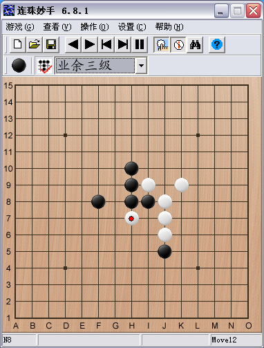

Fiver6.8.1下载!
#1 Fiver6.8.1下载! 作者：止水 发表时间：2007-10-20 20:26:24
Fiver6.8.1其实是Fiver6.8的美化版
为区别于6.8版，所以改名为6.8.1版
 fiver681.rar
fiver681.rar
［ 有志青年 于 2007-10-22 10:55:36 时奖励此帖[金币加 20 威望加1］
#2 Re:Fiver6.8.1下载! 作者：cly02e 发表时间：2007-10-30 1:15:51
确实好看了很多#3 Re:Fiver6.8.1下载! 作者：xr__ 发表时间：2007-10-30 8:23:37
能不能把界面改大点！！！！ 只占显示器的1/10#4 Re:Fiver6.8.1下载! 作者：星尘 发表时间：2007-10-30 15:07:37
有了坐标，方便了许多，要是再带走子顺序号就更好了。#5 Re:Fiver6.8.1下载! 作者：醉轩听雨 发表时间：2007-11-5 6:49:39
在那个载？？？#6 Re:Fiver6.8.1下载! 作者：guoyon 发表时间：2007-12-1 1:44:40
不是很好用啊，我下了，可能是我基础太差，下黑棋还老输。#7 Re:Fiver6.8.1下载! 作者：欧乙平 发表时间：2008-3-16 8:50:50
不知棋力如何啊？？？#8 Re:Fiver6.8.1下载! 作者：天福五子棋 发表时间：2008-5-7 15:44:42
在哪下载啊？我的邮箱是wang888vip@163.com 哪位大侠帮忙发个过来啊#9 Re:Fiver6.8.1下载! 作者：秘密 发表时间：2008-5-9 16:54:49

谢谢分享
#10 Re:Fiver6.8.1下载! 作者：天福五子棋 发表时间：2008-5-9 22:38:54
呵呵 昨天没看到 今天过来仔细看 终于找到了 谢谢了#11 Re:Fiver6.8.1下载! 作者：月明竹青曲悠 发表时间：2008-5-27 18:12:12
最高棋力就是业余三段了？试过了，它的棋力还是不行！！
#12 Re:Fiver6.8.1下载! 作者：请输 发表时间：2008-6-7 4:02:04
谢谢。 。。。。。。。。。。。。。。。。
#13 Re:Fiver6.8.1下载! 作者：jedyin 发表时间：2008-6-17 10:03:24
不知道厉害不厉害
#14 Re:Fiver6.8.1下载! 作者：火来烧 发表时间：2008-8-22 14:38:36
我用它最高级和黑石下，结果老是黑石赢……………………
#15 Re:Fiver6.8.1下载! 作者：石磊 发表时间：2008-9-1 20:49:28
垃圾,棋力差
#16 Re:Fiver6.8.1下载! 作者：以棋会友以棋养性 发表时间：2008-9-28 19:49:10
好用吗？？？？#17 Re:Fiver6.8.1下载! 作者：醉轩听雨 发表时间：2008-9-29 9:17:24
支持下楼主!!#18 Re:Fiver6.8.1下载! 作者：白色呼吸 发表时间：2008-10-12 18:05:16
在哪里下载啊#19 Re:Fiver6.8.1下载! 作者：潇洒 发表时间：2008-10-12 18:48:34
点蓝色字的连接就可以下载
#20 Re:Fiver6.8.1下载! 作者：我爱五子棋伯园 发表时间：2008-10-15 9:22:03
FIVER的水平不敢恭维#21 Re:Fiver6.8.1下载! 作者：越狱行辕 发表时间：2008-10-19 23:51:12
小黑太强了拿这个练练
#22 Re:Fiver6.8.1下载! 作者：越狱行辕 发表时间：2008-10-21 23:18:54
 刚下了一盘斜月结果它变花月被我砍了
刚下了一盘斜月结果它变花月被我砍了
#23 Re:Fiver6.8.1下载! 作者：葫芦娃 发表时间：2008-11-30 17:28:19
很垃圾,很垃圾#24 Re:Fiver6.8.1下载! 作者：wrwak 发表时间：2008-12-1 13:17:56
只要你防守住基本上他就败了#25 Re:Fiver6.8.1下载! 作者：五星若连珠 发表时间：2008-12-28 23:25:31
下载了，学习中。这个软件好像就是以前有 如来佛 孙悟空字样的那个软件。个人觉得界面太小了。。。#26 Re:Fiver6.8.1下载! 作者：古麦 发表时间：2009-1-20 10:45:39
谢谢分享，目前水平太低，很难下得过它！
#27 Re:Fiver6.8.1下载! 作者：青方 发表时间：2009-1-20 21:55:56
Fiver的作者怎么不更新了，只是界面上改改没什么意思。#28 Re:Fiver6.8.1下载! 作者：天福五子棋 发表时间：2009-3-26 12:01:25
回来看看 不错不错 24楼说的废话，防守住了当然就赢了#29 Re:Fiver6.8.1下载! 作者：香烟 发表时间：2009-6-26 16:33:12
很好啊，找了好久了
#30 Re:Fiver6.8.1下载! 作者：香烟 发表时间：2009-6-26 16:34:37
找了好久了 就是它了
#31 Re:Fiver6.8.1下载! 作者：自来水 发表时间：2009-6-26 16:39:43
黑石和Goro在有无禁分别秒杀之...
不过既然是国产的,还是顶一下
#32 Re:Fiver6.8.1下载! 作者：林凯旋 发表时间：2009-7-4 3:07:36
今天这软件连续输给5个人....我对这东西失望了
#33 Re:Fiver6.8.1下载! 作者：宋杰 发表时间：2009-7-10 11:00:03
界面最好大一点啊，看着好累的。功能很强大，谢谢。#34 Re:Fiver6.8.1下载! 作者：随风飘逸东东 发表时间：2009-8-15 0:29:00
那谢谢了 能下载吗#35 Re:Fiver6.8.1下载! 作者：颜昊 发表时间：2009-8-20 13:52:21
Mcafee有报毒，怎么回事？？#36 Re:Fiver6.8.1下载! 作者：安都文艺路 发表时间：2009-8-30 13:17:31
如何下载啊
#37 Re:Fiver6.8.1下载! 作者：钱振鹏 发表时间：2009-12-25 15:32:47
我是初学者，执黑子都下不过业余三级！真想拿块豆腐撞死算了！#38 Re:Fiver6.8.1下载! 作者：随风兮飘荡 发表时间：2009-12-26 10:53:52
不错，是最新的吗？#39 Re:Fiver6.8.1下载! 作者：迅 发表时间：2010-1-7 19:44:31
好看了，，下起来也也舒畅#40 Re:Fiver6.8.1下载! 作者：五子棋徒弟 发表时间：2010-7-20 13:07:55
QQ3段水平，努力提高到5段。#41 Re:Fiver6.8.1下载! 作者：情动指间 发表时间：2010-8-26 12:40:22
瞧瞧瞧瞧瞧瞧#42 Re:Fiver6.8.1下载! 作者：五子米猫 发表时间：2010-9-11 19:19:51
这个软件多米尼级别和五子棋大师2的最高水平还是有一拼的...#43 Re:Fiver6.8.1下载! 作者：疯狂的兔子 发表时间：2010-9-28 20:07:31
感谢楼主！#44 Re:Fiver6.8.1下载! 作者：黄欢五子棋 发表时间：2010-10-10 14:47:48
真的好强#45 Re:Fiver6.8.1下载! 作者：天福五子棋 发表时间：2010-12-22 9:57:46
点点滴滴#46 Re:Fiver6.8.1下载! 作者：李建峰 发表时间：2010-12-28 19:29:44
谢谢分享。#47 Re:Fiver6.8.1下载! 作者：洪城骄子 发表时间：2011-5-12 13:26:01
好东西，今天要下个够！#48 Re:Fiver6.8.1下载! 作者：汪洋孤舟 发表时间：2011-9-1 8:29:53
棋力不行啊！#49 Re:Fiver6.8.1下载! 作者：佛心诚 发表时间：2011-9-15 23:42:10
当初就是不服气老输它才喜欢上五子棋的#50 Re:Fiver6.8.1下载! 作者：小布丁 发表时间：2012-5-23 14:17:25
滴答滴答滴答滴答滴答滴答滴答滴答滴答滴答滴答答#51 Re:Fiver6.8.1下载! 作者：黄药师 发表时间：2012-5-23 14:59:21
丸子来教学一下，如何修改里面的猪八戒什么的！#52 Re:Fiver6.8.1下载! 作者：氢氧化钠 发表时间：2013-7-23 15:30:17
刚发现，这个不能分辨多重禁手
不信你们试下
哪位高手能把这个完善下啊
#53 Re:Fiver6.8.1下载! 作者：隔壁的沙漠 发表时间：2014-8-23 0:15:16
谢谢分享！！！